MemoMap
a digital map diary app
ui/ux design + iOS development
In the fall of 2022, I took Mobile Application Development, a class where students form teams of 3 and work in 6 sprints over the semester developing an app together. My team created MemoMap, an app for people to keep in touch with friends by sharing travel and food photos like a digital map diary.
duration –– September 2022 to December 2022
collaborators –– Chloe Chan, Fiona Chiu
tools –– Swift/SwiftUI, Firebase, Figma, Github, XCode
methods –– Agile, Full-Stack, User Testing, Wireframing, Prototyping

Final Deliverables
Demo
Poster
Promo Video
Process
Sprint 1 –– Ideation
Tasked with “creating a great idea for a mobile application", we focused on utilizing the mobile mindset and leveraging the strengths of the mobile platform. Drawing from our own interests and passions, we came up with a few different ideas each and ultimately landed on an idea for a “scratch” map with photos and friends.
We conducted an initial user research survey on 17 young adults where we gained the following insights:
- 12 of 17 trust friends and family most when it comes to recommendations
- 15 of 17 use their camera roll to keep track of places visited
- 11 of 17 share travel content the most on social media
- 13 of 17 use BeReal and like the app for the following reasons
- "fun way to interact and keep in touch with friends everyday"
- "app creativity"
- "low effort and low commitment"
- "ability to look back on past BeReals as a daily journal
Based on additional research and our user survey, we identified the following pain points to address:
- craving for human connection and seeing what your friends are up to
- overthinking social media posts and forgetting to live in the moments
- effort required when documenting travel experiences
- overloaded recommendations when looking for places to visit
From there, we defined 3 main features as the basis for our app:
- adding a photo/memory/pin
- viewing you and your friends map
- answering the daily prompt and viewing friends' answers
Sprint 2 –– User Experience
We first drafted low-fi wireframes in which I focused on User Flow 2, searching and viewing your friends map. While designing, we faced many design possibilities in which we would quickly create multiple versions and leave the decisions to user testing.
User Flow 1: Adding a photo
Option A: Camera Icon
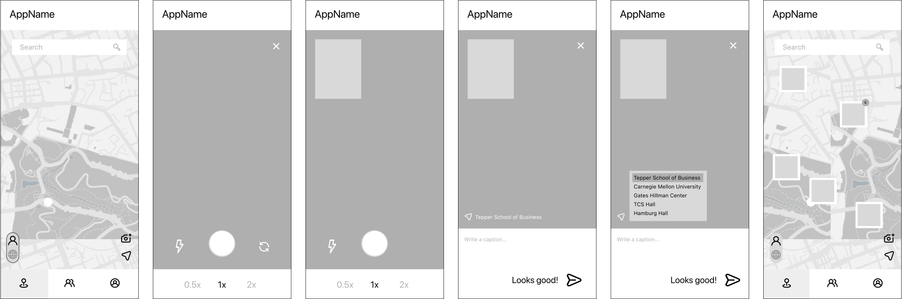Option B: Camera Tab
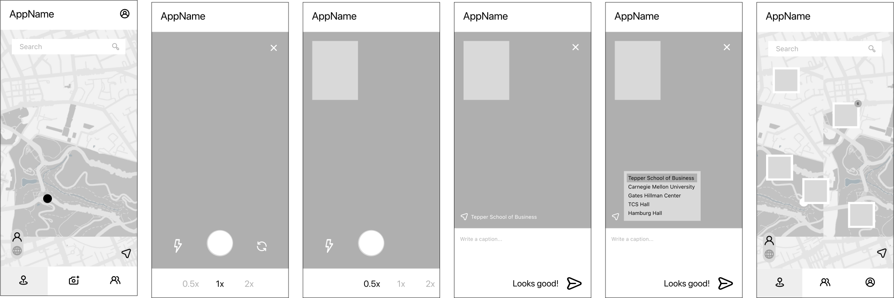User Flow 2: Searching and viewing you and your friends map
Option A: Toggle Map
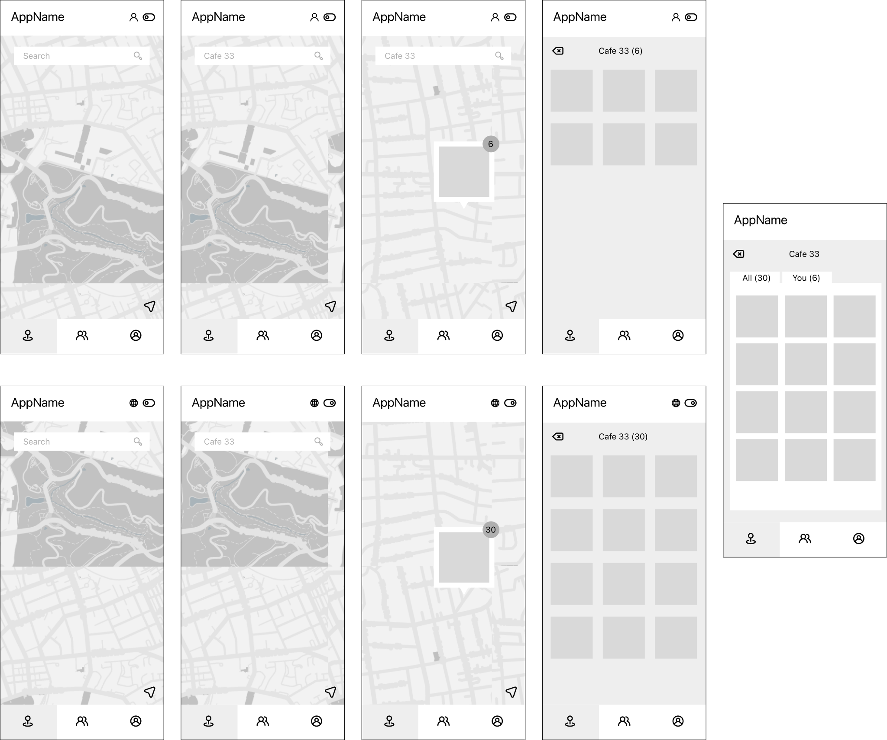Option B: Separate Friends Map
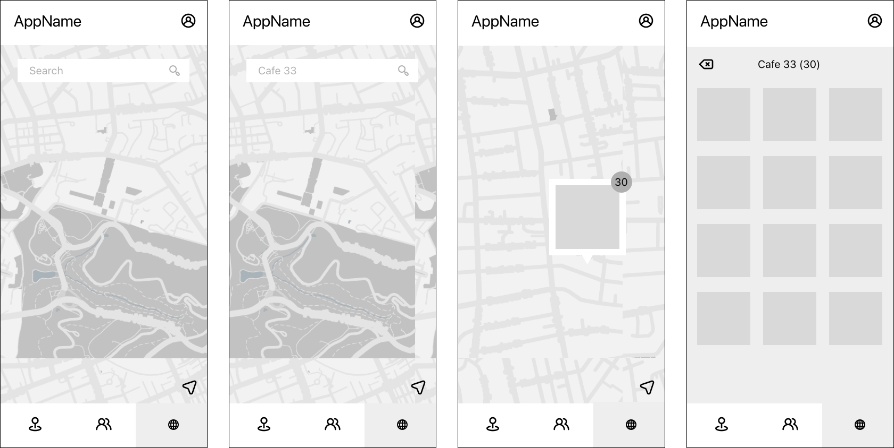User Flow 3: Answering the daily prompt and viewing friends' answers
Part A: Answering the Prompt
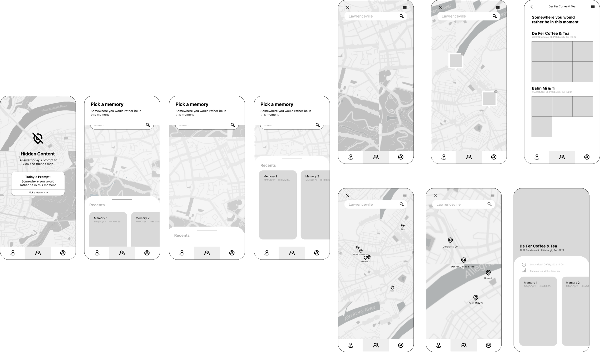Part B: Viewing Friends Answers
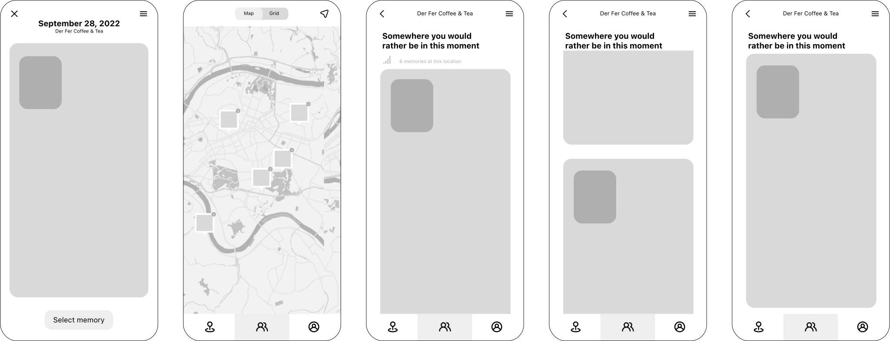User Testing Insights
- Adding a photo
- most users preferred a camera tab for easier access and similarity to other social media apps
- preferred pressing the shutter button once to take both photos as opposed to twice
- adjusting a location was intuitive
- Searching and viewing you and your friends map
- every user preferred toggle while the single icon was confusing to identify the maps
- Answering the daily prompt and viewing friends' answers
- pop-up felt too similar to Apple's default pop-up buttons for error messages or scams --> turned this into a button
- left/right recents swiping gesture not intuitive --> decided to switch to grid format
- too many clicks to answer the prompt --> added available photos on the map when selecting
- users liked the uniqueness of map view compared to a typical feed view --> decided to keep both as options for the user
Based on our user testing insights shown below, I took lead on working towards mid-fi wireframes.
User Flow 1: Adding a photo
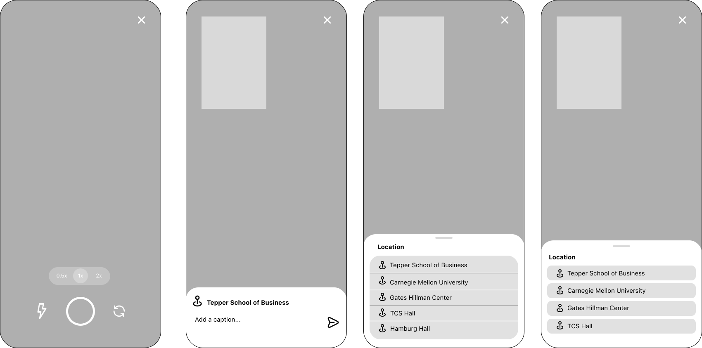User Flow 2: Searching and viewing you and your friends map
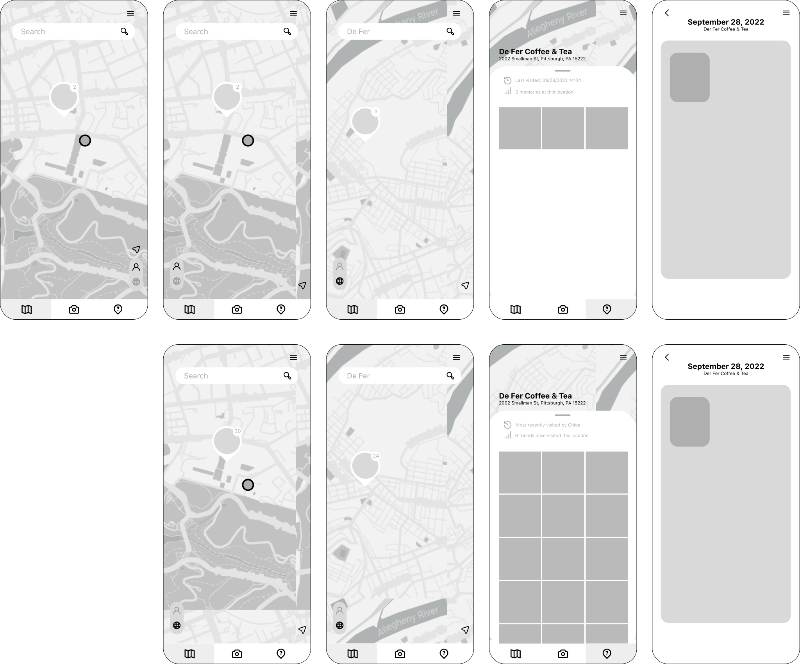User Flow 3: Answering the daily prompt and viewing friends' answers
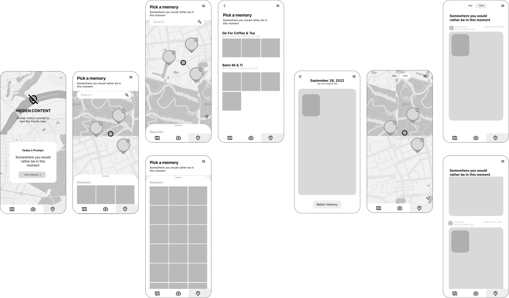Adding color, images, and greater detail, we finalized our hi-fi wireframes as such and did a final round of user testing to confirm our design choices.
User Flow 1: Adding a photo
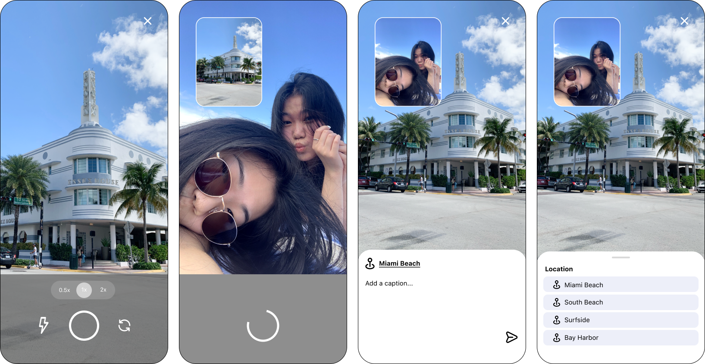User Flow 2: Searching and viewing you and your friends map
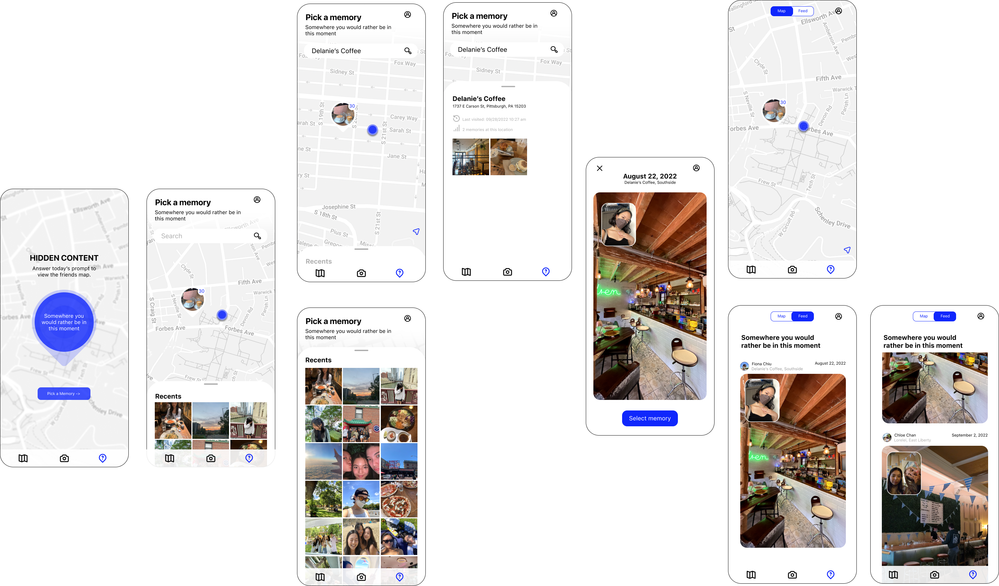User Flow 3: Answering the daily prompt and viewing friends' answers
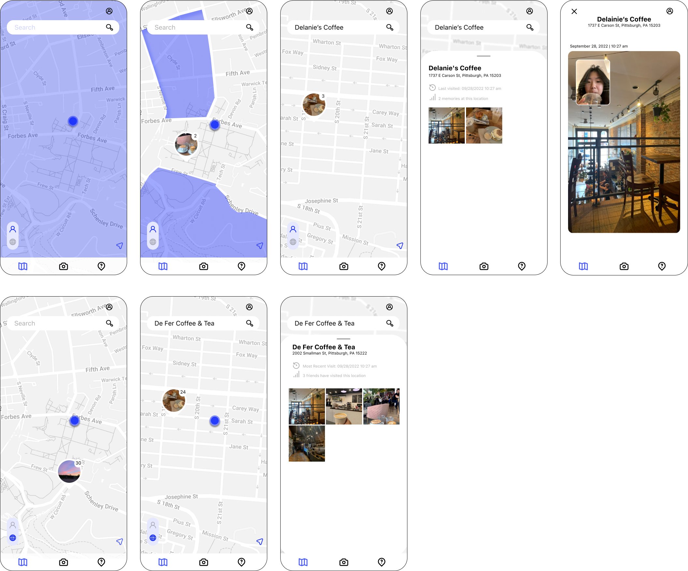Sprint 3 –– API & Prototyping
From our hi-fi wireframes, I created an interactive prototype and conducted 2 of 4 user tests. We maintained three user flows from the previous sprint and I also added screens for user profiles and adding friends. We asked participants to think aloud as they navigated the prototype.
As for our API, we decided to use Apple's MapKit for all the map functionalities due to its streamlined integration for XCode (as opposed to Google Maps API). We tested out dropping pins based on user location as well as searching for and displaying nearby locations to ensure we could implement the core functionalities we needed.
In order to store data, we designed a Firestore NoSQL database structure through data mapping our wireframes and then set up the corresponding database in Firebase.
Sprint 4 –– Version 1 of MemoMap
For our first version, we determined our A-level features to develop:
- adding a memory to the map with camera
- viewing memories on the map
- adding friends
While the features sounded simple, they proved to be more complex than we realized. We began to face the most challenges throughout the process. From struggling with XCode setup, lacking Swift knowledge, and manually merging our code despite also using Github, we faced a steep learning curve in the two weeks to develop the first version of MemoMap.
I started the development process with a dual style camera. This took about 18 hours to get a functioning camera with proper access and threading. Slightly buggy but pretty well functioning, I was able to capture both front and back images successfully.
My two team members took on Firebase and MapKit which also came with many difficulties. Custom annotations with MapKit as well as storing images with Firebase remained our largest challenges.
After finishing up the camera, I focused on the navigation and structure of our app as a whole, creating different modular front-end pieces and filling in gaps where needed.
By the end of this sprint, we built out most of our features with a functioning front-end but no back-end.
Sprint 5 –– User Testing Version 1
We tested our app on 6 target users. Participants were asked to think aloud as they freely navigated through the app. Most our feedback revolved around UI elements in which we hadn't quite matched our design prototype due to time and/or Swift constraints.
In general, we found most of our icons were too small and hard to see because the background as a map, is very complex.
Some participants found the search bar to be more bothersome than helpful because they weren't able to hit "return" to execute search but had to click on the magnifying glass icon. Participants agreed a more functional search was needed that adhered to the typical memory model in order to be useful.
For the camera, all participants wanted the button the be bigger and faster to respond to user interaction. They did enjoy the simlarity to BeReal which made the experience simple and intuitive.
Friend requests were intuitive after finding the button for it. It was easy to send/accept/deny friend requests.
As for the map, by far the larfest component, we recevied feedback on UI in the size of the search bar, look of the pins, and distracting text on the map. These were key focuses moving forward in working with MapKit constraints to follow our original design.
With all the valuable feedback, we revised our development plan and made action items to address the issues users faced.
Sprint 6 –– Version 2 of MemoMap
In the final phases of development, we faced a lot of stress in the complexity of our app. We spent a LOT of late nights together integrating code, fixing bugs, and struggling with different features. This almost led to us dropping our prompt feature due to time constraints but getting past the learning curve really helped us pick up the pace.
We were able to build out all of our planned features with a fully functioning front and back end for a successful app. Being able to deploy and use the final app on my phone felt like a great acheivement.
Reflection
This was by far the biggest, most challenging, but most rewarding project I’ve worked on. From the very beginning, I wanted to create an app I was passionate about and proud of. I’m very grateful to work with my two team members in which our strong collaboration with one another truly made MemoMap successful.
Key Takeaways
- learning Swift and building an app for the first time
- the complexity of building a fully functioning app from scratch –– lots of unforseen challenges with development
- scope creep! our app had too many moving pieces which left us feeling overwhelmed
- importance of equal effort when working with others!
my team with our mentors at the project showcase!